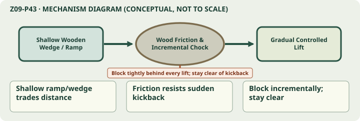

Z09-P43 · Tools and construction · New manuscript
Use wedges and inclined planes to gain controlled lifting force
Apply gentle, incremental wedging and ramped slides to lift or move heavy utility objects with minimal sudden drop risk.
When it applies · Shifting heavy camp supply crates, leveling stable surfaces or opening tight wood splits gradually.
Equipment · Sound wooden wedges, flat sturdy ramp planks where available, wooden mallet and blocking cribs.

Actions
- Recognize that a wedge and an inclined plane use the same physical principle—moving a modest force over a longer shallow ramp distance lifts or separates a heavier load gradually.[K06]
- Drive wooden wedges incrementally with a wooden mallet while keeping blocking chocks tight behind the lift so the object cannot slam back if a wedge slips out.[K06, K12, K08]
- Account for real-world surface friction: rough wood-on-wood friction absorbs substantial input force (reducing ideal mechanical advantage) yet also helps prevent sudden uncontrolled slide-back.[K06, ED]
Failure recognition · Stacking narrow unstable loose stones under a ramp or hammering brittle wedges without blocking, causing a heavy load to kick sideways onto shins.[K06, K08, K12]
Verify · Confirm shallow stable ramp/wedge angle, solid blocking support and clear operator footing outside the slip trajectory.[K06, K08, ED]
Stop or change course · Stop immediately if wedges begin shooting backward, supports tilt or the mass exceeds safe manual control.[K06, K08]
Evidence and editorial notes
- K06 · NPS · Forces and Tools (current web edition)
- Section: Forces and Tools > Simple Machines and Mechanical Advantage · Conditions: Levers, wedges, inclined planes and friction mechanisms
Support: Simple machines trade force for distance (levers, wedges, pulleys); friction, alignment and material strength limit real-world output below ideal ratios.
Limitations: Ideal mechanical advantage ignores friction losses and breaking strength of ropes or anchors. · Conflicting evidence: None; clarifies physical trade-offs without implying engineered load ratings.
Editorial note: Anchors mechanical-advantage, wedge-splitting and pulley/rigging limit cards. · Specialist reviewer: Mechanical engineering and rigging safety
Primary source · checked 2026-11-24 - K08 · OSHA · Hand and Power Tools (OSHA 3080) (agency PDF)
- Section: Personal Protective Equipment and Work Area Control · Conditions: Cutting, splitting, striking and rigging operations
Support: Maintain stable footing, eye and hand protection appropriate to flying chips or snapped cordage, and clear bystanders outside the swing or snap-back zone.
Limitations: Field kits often lack shop PPE, requiring slower conservative technique and lower-energy methods. · Conflicting evidence: None; drives snap-back and work-circle exclusion zones in Z09.
Editorial note: Enforces conservative work circles and snap-back clearance. · Specialist reviewer: Tool safety and occupational safety
Primary source · checked 2026-11-24 - K12 · USDA Forest Service · Handtools for Trail Work (0523-2810-MTDC) (agency handbook)
- Section: Wedges, Chisels and Striking Surfaces · Conditions: Splitting deadwood or driving stakes with hand tools
Support: Avoid steel-on-steel striking of hardened axe polls or unguarded wedges that can chip metal shards; use wooden mallets or purpose-designed striking faces and retire mushroomed heads.
Limitations: Improvised stone hammers fracture unpredictably and throw sharp flakes. · Conflicting evidence: None; informs baton/wedge/mallet safety cards.
Editorial note: Guides safe splitting, stake driving and struck-tool failure recognition. · Specialist reviewer: Tool safety and materials safety
Primary source · checked 2026-11-24
Source lineage · NPS Forces and Tools and USFS handtools; new manuscript · Classification · New manuscript.